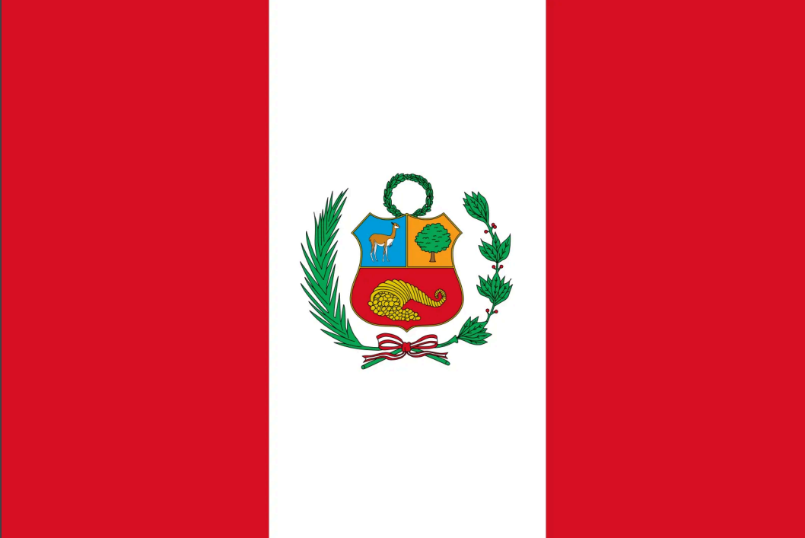

My name is Tyler and I go by Ty. I was born in SLC Utah and live with my family in Saratoga Springs UT. I am currently working as a Client Advocate for a company called Global Payments. I have a mini goldendoodle puppy named Lola. I love vido games and spending time with my wife. My wife is from Lima Peru so I have learned to speak spanish with her and embraced her culture.
About Me
Lima, Peru

Over 70% of the worlds alpaca population lives in Peru. This member of the camel family lives in the Peruvian Andes Mountains, which runs the entire western coast of South America. The sale of alpaca meat and textile fiber is the main source of income for about 150,000 families in Peru. Alpaca wool comes in 22 natural colors and is considered one of the worlds most luxurious fabrics.